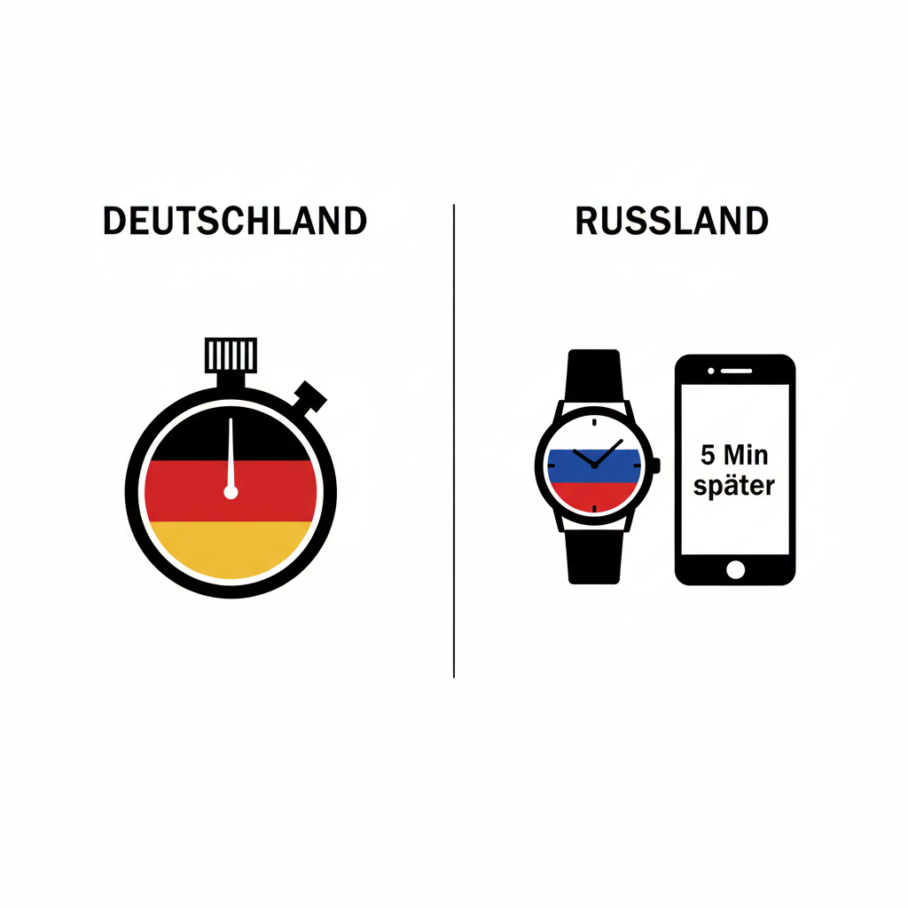

6 kulturelle Aspekte im Vergleich

Zeit & Planung
Pünktlichkeit vs. Flexibilität
Deutschland
Zeit ist eine feste, planbare Ressource. Unpünktlichkeit gilt als Respektlosigkeit – Termine werden minutengenau eingehalten.
Russland
Zeit ist flexibel und wird zwischenmenschlichen Prioritäten untergeordnet. „5 Minuten später" kann eine halbe Stunde bedeuten – und das ist akzeptiert.

Bildung & Prüfungen
Individuelle Leistung vs. Gruppensolidarität
Deutschland
Prüfungsleistungen sind Einzelleistungen. Eigenverantwortung und individuelle Vorbereitung stehen im Vordergrund. Abschreiben gilt als ernster Regelverstoß.
Russland
Gegenseitige Unterstützung in der Gruppe ist Ehrensache – auch bei Prüfungen. Das Überleben im Kollektiv hat oft Vorrang vor starren Regeln.

Gastfreundschaft & Feiern
„Bring Your Own" vs. Überfluss-Gastgeber
Deutschland
Partys sind oft „Bring your own" – jeder bringt seinen Alkohol mit. Der Gastgeber stellt den Raum bereit, die Kosten werden aufgeteilt.
Russland
Der Gastgeber füllt den Tisch bis an den Rand – es ist eine Frage der Ehre. Gäste sollen sich bedienen und nie das Gefühl haben, zu wenig zu haben.

Soziale Interaktion
Höfliches Lächeln vs. echte Wärme
Deutschland
Deutsche lächeln Fremde freundlich, aber unverbindlich an. Oberflächliche Höflichkeit ist Standard – tiefere Verbindung entsteht langsam.
Russland
Russen lächeln nur, wenn sie echten Grund haben. Dafür sind Freundschaften intensiv, körperlich und von tiefer Loyalität geprägt.

Führung & Entscheidung
Konsens vs. Top-Down-Autorität
Deutschland
Entscheidungen entstehen oft durch Diskussion und Konsens. Mitarbeiter bringen aktiv Ideen ein – flache Hierarchien sind in vielen Firmen Norm.
Russland
Autorität und Hierarchie werden stark respektiert. Top-Down-Entscheidungen sind die Regel – der Chef entscheidet, die anderen führen aus.

Kommunikation & Feedback
Sachliche Kritik vs. persönliche Wahrnehmung
Deutschland
Deutsche trennen klar zwischen Sach- und Beziehungsebene. Direkte, sachliche Kritik gilt als konstruktiv und professionell.
Russland
Sachkritik wird oft als persönlicher Angriff empfunden. Feedback muss behutsam eingebettet werden, um die Beziehung nicht zu belasten.